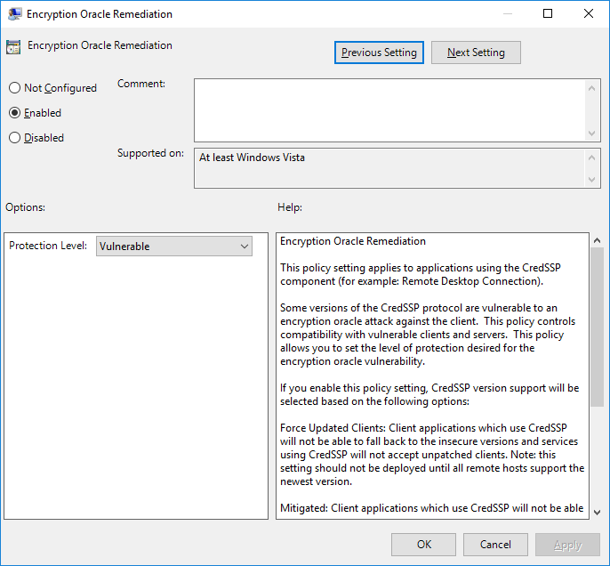

Welcome to mRemoteNG’s documentation!¶
About mRemoteNG¶
mRemoteNG is an open source, multi-protocol, multi-remote connections manager that aims at providing you with a clutter-free, unstressful platform to manage all your remote connections in one place. The application is released under the GPLv2 and is being managed on GitHub.
As of now mRemoteNG supports the following protocols:
RDP - SSH - VNC - ICA - Telnet - RAW - RLogin - HTTP/S - PowerShell
Key Features¶
- Free and Open Source, released under the GPL
- Organizing connections into panels and tabs
- Multiple supported protocols (RDP, VNC, ICA, SSH, Telnet, RAW, Rlogin and HTTP/S)
- Easy to organize and maintain list of connections
- Inheritance makes it possible to store properties on folder basis and let the underlying connections inherit this info
- Importing connections from Active Directory
- Creating nested folder structures to categorize connections
- “Quick Connect” feature to quickly open a connection without creating an entry
- “Quick Search” feature to quickly find a connection while typing
- Support for SCP/SFTP (SSH) file transfers
- Assign icons to connections for quick identification
- A screenshot manager to create screenshots of running connections
- “Auto-Update” feature
- Minimize to system tray
- Fullscreen (Kiosk) mode
- Assign global credentials to use when no information is provided on connection basis
- Host Indication on each connection to show if host responds to ping requests
- …
Version Numbering¶
Note
We are currently rethinking our version numbering scheme and are considering Semantic Versioning but will need to discuss it further.
Our versions follow the format: Major.Minor.Patch.Build
| Name | Incremented | Description |
|---|---|---|
Major |
Manually | We currently don’t increment this number |
Minor |
manually | We currently use this number to indicate releases that include new
functionality and bug fixes
|
Patch |
Manually | This number represents the current patch level. Patches are typically released to resolve bugs |
Build |
Manually | This number represents
It exists to help prevent version collisions during development |
Release Channels¶
Note
We currently do not offer a nightly build channel. To get the absolute bleeding-edge updates, you will need to build mRemoteNG from source. Instructions on setting up your development environment can be found here:
Stable¶
The Stable channel includes only officially released versions of mRemoteNG. This channel receives updates much less often than the others, but has the least chance for bugs.
These releases will be marked as a normal release on GitHub and may use terms like Final or Stable in the release.
This is the recommended and default channel for all users.
Beta¶
The Beta channel includes pre-release versions in addition to what the Stable channel offers. This includes any version marked as beta or rc (release candidate). This channel is meant to give users an advanced look at features and fixes that are done but not fully tested, yet.
While these versions are generally stable, there is still a higher chance of encountering bugs. Beta channel users are highly encouraged to enter bug reports for any issues that arise during their use of the program.
Use this channel if you can accept a higher rate of bugs and would like early access to releases.
Development¶
The Development channel includes the pre-release alpha versions in addition to what the Beta and Stable channels offer. At this level, you will receive every version of the program that we publish on GitHub.
This channel is meant for users that would like to help us test and develop the program. While we try to ensure that no serious bugs get out even in these early versions, we cannot make any guarantees to the stability of the application. Users of this channel are highly encouraged to enter bug reports and provide feedback to how development is progressing.
Use this channel only if you can accept potentially serious bugs and would like to help us test early versions of the program.
License¶
mRemoteNG is written under the GNU GPLv2 license and is a free software.
Free software is referred to freedom, not price. The General Public Licenses are designed to make sure that you have the freedom to distribute copies of free software (and charge for the service if you wish), that you receive source code or can get it if you want it, that you can change the software or use pieces of it in new free programs; and that you know you can do these things.
For example, if you distribute copies of such a program, whether gratis or for a fee, you must give the recipients all the rights that you have. You must make sure that they, too, receive or can get the source code. And you must show them these terms so they know their rights.
To understand and read more of the license that mRemoteNG is using. Please follow the link here to know more: GPL (V2) GNU Project website
Installing mRemoteNG¶
Supported Operating Systems¶
These are the supported and tested operating systems that mRemoteNG can run on:
Minimum Requirements¶
Note
In recent versions of Windows 10 and Windows Server 2016 the below requirements are already provided by the system.
However they are listed below just in case you need to know what mRemoteNG actually needs for different protocols and error searching on troubles with installing.
Microsoft Terminal Service Client 6.0 or later
- Needed if you use RDP. mstscax.dll and/or msrdp.ocx be registered.
-
- Needed if you use Telnet, SSH, Rlogin or RAW. Included in all packages.
- An appropriate and integrated version is included with mRemoteNG.
-
- Needed if you use ICA. wfica.ocx must be registered.
Suggested for Windows 7 and Windows 2008 R2 Clients¶
Tip
You can use powershell to check if the hotfixes are installed. Example: Get-HotFix | where {$_.HotFixID -eq "KB2574819" -and $_.HotFixID -eq "KB2592687"}
The following updates are suggested (but not required) for Windows 7 / Windows Server 2008 clients:
- KB2857650 - Update that improves the RemoteApp and Desktop Connections features is available for Windows 7
- KB2830477 - Update for RemoteApp and Desktop Connections feature is available for Windows
- KB2913751 - Smart card redirection in remote sessions fails in a Windows 7 SP1-based RDP 8.1 client
- KB2923545 - Update for RDP 8.1 is available for Windows 7 SP1
- KB2574819 - Adds support for DTLS in Windows 7 SP1 and Windows Server 2008 R2 SP1
- KB2592687 - RDP 8.0 update for Windows 7 and Windows Server 2008 R2
- KB2965788 - MS14-030: Description of the security update for Remote Desktop Security Release for Windows: June 10, 2014
- KB2985461 - Error 0x800401f0 when you update RemoteApp and Desktop Connections feeds in Windows 7 or Windows Server 2008 R2
- KB2984972 - Update for RDC 7.1to support restricted administration logons on Windows 7 and Windows Server 2008 R2
- KB2984976 - RDP 8.0 update for restricted administration on Windows 7 or Windows Server 2008 R2
Install¶
Downloads are provided in three different packages, binary package, portable package and source package. They are described further down this page.
Binary package¶
The binary package of mRemoteNG is a compiled version of mRemoteNG which comes in an MSI installer. This is the most common way to install mRemoteNG and get up and running. For more custom and advanced installs of mRemoteNG then continue reading further down this page.
On the mRemoteNG main website download page choose (MSI) from the downloads to get the binary package.
Portable package¶
The portable package consists of the same files as the binary package but contains a modified version of the executable which stores and loads all your settings from files in the application’s directory. This package can be used to run mRemoteNG from a USB stick and preserve your configuration wherever you go.
On the mRemoteNG main website download page choose (ZIP) from the downloads to get the portable package.
Source package¶
This package is a package provided to be launched within Visual Studio. The only way to launch mRemoteNG using this package is by compiling it from inside Visual Studio.
Command line install¶
There is also the possibility to install mRemoteNG through command line with the binary package.
For example:
msiexec /i C:\Path\To\mRemoteNG-Installer.exe PROPERTY1=value PROPERTY2=value
To explain the properties that can be set during install we will go into details of them below.
Extend Installer Properties¶
The following extended properties can be provided to the installer when running it from the command line.
| Property | Accepted Values | Description |
|---|---|---|
| INSTALLDIR | Any valid folder path | This allows you to set the installation directory
from the command line. For paths that contain
spaces, enclose the path in double quotes (“”).
This overrides any value found in the registry.
Introduced in v1.75 beta 2.
|
| IGNOREPREREQUISITES | 0 or 1 |
When the
IGNOREPREREQUISITES property is setto
1, the installer will not be halted if anyprerequisite check is not met. You must still run
the installer as Admin - this flag will not remove
that requirement. Introduced in v1.74.
|
Examples¶
Install to a custom folder
msiexec /i C:\Path\To\mRemoteNG-Installer.msi INSTALLDIR="D:\Work Apps\mRemoteNG"
Ignore prerequisites during a normal install
msiexec /i C:\Path\To\mRemoteNG-Installer.msi IGNOREPREREQUISITES=1
Ignore prerequisites during a silent install
msiexec /i C:\Path\To\mRemoteNG-Installer.msi /qn IGNOREPREREQUISITES=1
Troubleshooting installation¶
If you find the installer is not working as expected, there are several things you can do to troubleshoot.
Turn on verbose logging by using the
/lv* <log path>argument at the command line.msiexec /i C:\Path\To\mRemoteNG-Installer.msi /l*v C:\mremoteng_install.log
Uninstall¶
Standard Uninstall¶
mRemoteNG basic binary package can be uninstalled with Windows Control Panel. If for some reason it does not work please follow information provided below for Manual Uninstall.
Manual Uninstall¶
If for some reason you cannot uninstall mRemoteNG from the Windows Control Panel, you can manually uninstall the program using the following steps:
Note
If you are using the Portable version, simply deleting the folder that contains mRemoteNG should be sufficient. These uninstall instructions are only necessary for the normal binary .MSI installed version of mRemoteNG
- Delete the folder where mRemoteNG was installed. By default, this is:
C:\Program Files(x86)\mRemoteNG
- Delete all mRemoteNG custom registry entries (See above table for locations)
- Delete the mRemoteNG install entry from one of the following locations. Search for “mRemoteNG” in the DisplayName field:
- x86:
HKEY_LOCAL_MACHINE\SOFTWARE\Microsoft\Windows\CurrentVersion\Uninstall\ - x64:
HKEY_LOCAL_MACHINE\SOFTWARE\WOW6432Node\Microsoft\Windows\CurrentVersion\Uninstall\
- x86:
- (Optional) If you would also like to delete user data, delete the folders mentioned here:
User Interface¶
Main Window¶
After launching mRemoteNG for the first time you will be see the main interface window looking similar to what is being shown below.
mRemoteNG 1.77 first launch
In the next part we will start to explore the interface of mRemoteNG.
Default Screen¶
The default screen of mRemoteNG
- Menubar - Main menu, Quick Connect
- Sidebar - Connections, Config
- Work area - Remote Connections
- Footer - Notifications
mRemoteNG default Screen, RDP to a Windows 2012 R2 host
The default interface is very basic in that it will show the most important part to get started with mRemoteNG. We will explain more details of the interface further on this document.
Customization¶
See also
Keyboard Shortcuts - For keybindings in mRemoteNG
mRemoteNG supports themes and keyboard shortcuts.
Note
Keyboard shortcuts can be overwritten when a connection is active. Since the connection might use the same shortcut
The mRemoteNG shortcuts will work when the interface is in focus but not so often when the remote connection is active.
Themes¶
These can be chosen from the . There are also possibilities to create your own themes inside the settings for themes. By default mRemoteNG has turned off the themes but they are easily enabled by choosing another theme rather then the default (vs2015light) one.
Warning
In order for the theme to load, mRemoteNG needs to be restarted
Panels¶
mRemoteNG is using tabs and panels to stay organized but also to create a better view of all multitasking that is being done inside the application.
Explanation¶
Panels are used to organize tabbed conections. This might seem a bit confusing at first glance but is a great way to stay organized. Below is a few examples of how to use panels to give you a hands on better view of them:
- Test and Production - You can add 2 panels where you have test servers in one panel and production connections in the other
- Datacenters - Maybe you want to divide panels into different datacenters
- Temp project - To see all servers you work on for a temporary project
- Home vs Work - Or divide them up into where home connections are and work connections are located
As you can see the panels organization do have benefits to it. Below you will see a screenshot of a organized view where Domain A is in panel 1 and Domain B is in panel 2.
Example two panels created with Domain A and Domain B
The function of a panel works as a sort of workspace.
Creating Panels¶
Usually panels are created using connections and folders to stay organized automatic when making connections. However you can also create panels manually.
Menu items for panels under View
Creating manual panels will make you able to organize tabs manually in mRemoteNG. To then open a connection to the new panel, right click on the connection and use
The other option in the menu name Connection Panels will list all panels that are available in mRemoteNG window.
More Options¶
If you right click on the panel there are a few more options that can be set:
Right click context menu for panel
- Rename - Rename the panel
- Send to… - Send the whole panel to monitor/screen [number]. Note this is not a real window but a detachable panel. If you double click the title then the panel will go back to mRemoteNG window and not fullscreen the window.
Connections¶
The connections dialog is the main collection of all connections that inside mRemoteNG. This document will explain the details of the connections dialog.
Connection Tree¶
New Connection¶
Tip
You can also duplicate an existing connection. Just right click on folder or connection to duplicate the item. The information is then carried over for editing. This can save a lot of time when the connection list is large.
Tip
When inside an SSH session you can open the PuTTY menu by holding down the CTRL key while right-clicking into the session window.
Creates a new connection item in the connections dialog after where cursor is present.
New Folder¶
Tip
Folders can help to make adding connections easier. By setting a folder with some values that can be inheritaded down to the connections.
Creates a new folder in connections dialog after where cursor is present.
View¶
Collapses or expands all directories in the connection dialog. Useful when working with a lot of connections sorted in different directories.
Ascending¶
Works like a sort or a refresh to get connection in ascending order. (Descending order is note supported yet) When you have been moving around in the tree of connections, just click this item to refresh the list and get everything in ascending ordering.
Configuration¶
Config dialog to setup the connection specific properties. This includes inheritance from other items before the item and more. Details below is about how to work with this dialog to get the most out of connections and configuration.
Menu Items¶
- Red - Sort values Categories or Alphabetical
- Green - Show Properties, Inheritance values
- Blue - Connection icon
- Yellow - Host status (based on ICMP ping)
Sort Values¶
Sorts the values in properties either by Categories or Alphabetically.
- Categories sort - Shows values in categories with expanding options.
- Alphabetical sort - Expands everything and shows values in alphabetical order instead
Icon¶
Note
Don’t forget that mRemoteNG will save the change on exit auto unless you have unchecked this setting in options.
The icon indicates the visual identifier for the connection. Clicking the icon will let you set a different icon for the connection.
Status¶
Note
In order for this to work you have to open up ICMP. On windows servers this is also disabled in windows firewall.
Is a indicator that will glow red or green depending on the status of the host. The status is based on ICMP ping to the host.
Creating a connection¶
Tip
You can see an indicator in the properties window that is glowing green:
This icon does a ICMP ping on to check response from the server. If it glows green it indicates a connection response can be made using ping to the host. However this is turned off on windows by default. You have to enable ICMP and allow the firewall access for it.
Right click on the root item (the little blue globe named Connections) in the Connections panel and select New Connection.
A new item shows up under the root item. You can give it a name now (or rename it later). We’ll just call this connection “Test” for the moment.
Now lets look at the config panel in the bottom left, just under the connections panel. As you may notice this is where you configure all the properties of connections and folders.
Fill in the necessary properties and you have just created your first connection! You can now connect to the server with a simple double-click on the “Test”-connection!
Opening and Closing Connections¶
Note
If the connecting fails, the notifications panel will pop up and show an error message describing the problem.
There are multiple ways to open a connection in mRemoteNG, but the easiest way is to double click the connection in the Connections panel. If you double click the connection you will notice that the connection is going to try and open in a new panel called “General” and under a tab called “Test”. If all goes well you should see the remote desktop without any problems.
To close the connection you can do any of the following:
- Log off in the start menu (Closes the connection and logs you out completely from RDP)
- Close the panel with the (Which leaves your session active on server but closes connection in mRemoteNG)
- Close the connection tab with (Also keeps your login active on server but closes RDP connection in mRemoteNG)
- Double click the connection tab (Same as above where the connection is active on server but closes RDP connection in mRemoteNG)
Default Connection Properties¶
Default connection properties are a template that is applied when creating new connections. You can set both property values and inheritance settings that will be set in new connections.
Note
Currently, default connection properties are saved within the user settings of mRemoteNG and not with the connection file. Sharing a connection file between multiple machines will not share default connection properties.
How it is used¶
New Folders/Connections¶
When a new folder or connection is created, all default properties and default inheritance are applied to it.
Note
Changing default properties does not affect existing connections. The default values are only applied when the connection is first created.
Quick Connections¶
Default connection properties are also used when establishing quick connections. See Quick Connect for more details.
How to set them¶
You can set default properties and inheritance by going to the Connection Tree and clicking the appropriate button for the default settings you would like to change.
- Red - Default connection properties
- Green - Default connection inheritance
Quick Connect¶
The Quick Connect functionality of mRemoteNG allows you to quickly connect to a remote host using a variety of network protocols.
Prerequisites¶
- Knowledge of a DNS host name or IP address
- Knowledge of an appropriate protocol to communicate with remote host
- A predefined mRemoteNG connection
Using QuickConnect¶
To use Quick Connect, ensure the Quick Connect toolbar is enabled by selecting View and then Quick Connect Toolbar. Next, input a DNS host name or IP address into the box labeled “Connect”. This box will also save previous entries during your session.
Select the appropriate network protocol by clicking the arrow next to the Connect box.
If you wish to use an existing connection, select the globe icon next to the protocol button and select the appropriate connection.
Configuration¶
Quick connections take most of their configuration from the Default Connection Properties. All default properties are used except for:
- Hostname
- Protocol
- Port (the default port for the selected protocol is used)
Port Scan¶
The Port Scan feature (under Tools > Port Scan) is similar to a nmap port scan. It will scan a range of IP addresses and to determine if specific mRemoteNG supported protocols are active. Hosts can then be bulk imported into mRemoteNG.
Tip
If you leave this at the default of 0 & 0, the test will be for the default protocol ports that mRemoteNG supports.
- Start the Port Scan feature by clicking Tools > Port Scan in the menu bar.
- Input your Start IP and End IP of the range you’d like to scan.
- Enter the Start Port and End Port that mRemoteNG should test for.
- Click Scan
- Wait. Possibly a long time.
- The table will populate, and eventually you’ll get a notification that the scan has completed. Alternatively, you can press Stop to end the scan at any time.
- Change the dropdown to the protocol you’d like to import and click Import.
Screenshot Manager¶
The screenshot manager is a panel and tool that can be used to organize and take screenshots inside mRemoteNG.
Take a screenshot¶
To take a screenshot of a instance its as easy as to right click on the connection tab and press Screenshot and it will open the screenshot manager.
On the first image you can see the right click menu of the connection tab. Clicking the screenshot there will allow mRemoteNG to create a screenshot.
The second image is where the screenshots are stored in mRemoteNG. Here you can store and then decide what to do with the images after you are done taking screenshots.
Editing¶
The manager is a simple tool for saving and deleting screenshots. If you need to do more with the screenshots then the suggestion is to open them in a third party app. Here is what the manager allows you to do:
- Save
- Save All
- Delete
- Delete All
Once you press save, a window to save the files will come up where you want to save the screenshots.
Notifications¶
The notifications panel contains any errors or informational messages that mRemoteNG triggers. Some example errors can be if there is a problem to connect, information on lost connection and so much more. Notification settings can be found in (Tools > Options > Notifications) below we will explain what can be set and how they do affect for various troubleshooting.
Notifications general settings¶
Tip
If you dont want the panel to show at all. Then unmark all options inSwitch to Notification panel on. Then the panel will not come up automatically.
This will tell mRemoteNG what type of messages and the level of messages to send to the panel. It does not the level for the log that mRemoteNG has but only for panel output.
There is also 2 different options mentioned below:
- Show these message types - Level of messages to show in panel. (default: Warnings and Errors)
- Switch to Notifications panel on - If interface should switch to the panel when a level of message occurs (default: all enabled)
Logging settings¶
Here you define the logging of messages. That is a continues log which can be used to backtrack any error that has occurred. Good when for example reporting issues about mRemoteNG or to check more details about problems.
Log path - Choose where the log should recide (default: Log to application directory) Log these message types - Level of logging to logfile (default: Informations, Warnings, Errors)
Popups settings¶
When items are selected here you will recieve a popup on the error that occurrs based on level chosen in settings here. This can be useful if you do not want to use the notification area and only get a popup if error occurs. (default: all off)
Import/Export¶
You can import or export your connections to mRemoteNG. Imports can be done in various different ways. See below for more information.
Import¶
Import from File¶
Opens a normal file load dialog to open a exported xml or csv file for mRemoteNG. See Export to file further down this page for information on exporting your connections.
Import from Active Directory¶
This option can be used to import computers from a specific OU from you Arctive Directory.
Import from Active Directory dialog
- Go to:
- Choose the domain to check for computers available
Note
Check the Import sub OUs checkbox if you want to import OUs recursively.
Import from Port Scan¶
This option opens a dialog to import connections from a port scan. Both network and port range can be specified.
Important
Port Scan uses nmap to scan the ports. Be carefull on how you scan your network, as this can be considered a brute force attack.
Import from Port Scan dialog
- First IP - Start of ip to scan from
- Last IP - Stop of ip to scan to
- First Port (Optional) - Start port to scan from
- Last Port (Optional) - Stop port to scan to
- Timeout [seconds] - Seconds to wait until continuing scan
Once the scan is done you can select connections to import with some options on the lower part of the dialog:
- Protocol to import - Which protocol to use for the import of the connection(s)
Export to file¶
Here you can export your settings to a file to share or backup. The dialog shown below is the dialog of which you chose the options to export.
Export to file dialog example
Export options:¶
Here is a detailed explanation of the export dialog.
- Filename - The output filename for which to save the export
- File Format - Currently supports xml and comma seperated csv output file format
- Export Items - Options to what you want to save
- Export everything - Will export all the connections
- Export the currently selected folder [nameoffolder] - Is used to only export all connections in the folder selected. Note! the [nameoffolder] is the name to which you have selected in the connection tree.
- Export the currently selected connection [nameofconnection] - Same as before with folder but uses the currently selected connection for export.
- Export Properties - Properties of the specific connections to export
Note
Options do change based on what is selected in the connection tree. You can try this out by right clicking on a folder and selecting Export to file on a connection to understand more
SSH File Transfer¶
SSH File Transfer functionality allows you to securely transfer files to a remote host over an encrypted tunnel using either SFTP or SCP.
Prerequisites¶
- SSH File Transfer requires an SSH service to listen on an available network port (default 22) on a remote host.
- A username and password must be supplied to connect with the remote host.
- The remote host must have a writeable folder on its filesystem to place the transferred files.
Configuration Options¶
- Host - The remote host you connect to. Can be DNS name or IP address.
- Port - Remote network port listening for SSH/SFTP/SCP traffic.
- User - Username for account to log on to remote host.
- Password - Password for account to log on to remote host.
- Protocol - Choice of SCP or SFTP protocol used for communication.
- Local File - Path of file to transfer from local host.
- Remote File - Path where file will be transferred on remote host. (e.g. “/home/John/Documents”)
Using SSH File Transfer¶
Begin by going to .
The tool will open a new panel inside mRemoteNG which allows you to configure some options for the SSH File Transfer. Each option is needed in order to complete a file transfer over SSH.
Main SSH File Transfer panel
- To populate the Local File option, select the Browse button and navigate to the desired file on the local filesystem.
- To populate the Remote File option, manually type desired filesystem path, including the desired file name.
Once all options are populated, select Transfer and the progress bar at the bottom of the window will show the progress of the transfer.
Troubleshooting SSH File Transfer¶
To troubleshoot issues with SSH File Transfer, consult the log under
%AppData%\mRemoteNG\mRemoteNG.log.
This log provides verbose information about successful and failed connections.
Common Issues¶
- ERROR - Please fill all fields
- This issue was likely encountered because you did not provide all information needed to establish the connection.
- ERROR- SSH background transfer failed!
- This issue was likely encountered due to a permissions issue. Ensure you have appropriate access to write to the specified Remote File.
- System.Net.Sockets.SocketException (0x80004005): No connection could be made because the target machine actively refused it
- This issue was likely encountered because the local host could not contact the remote host specified on the remote port specified. The issue may be caused by improperly configured firewall rules or a SSH service not listening properly on the remote host.
External Tools¶
External Tools can help you get things done that can’t be done in mRemoteNG.
For example you can:
- Start a command
- Launch your favorite FTP tool
This might not make much sense by itself because you can already launch your applications by using the Windows Start Menu, Quick Launch or whatever you prefer to start your apps.
But from within mRemoteNG you can launch applications and tell them what to do with the use of arguments, parameters and variables
of the currently selected Connection. You can, for example, select your home router’s SSH connection entry and do a traceroute (tracert)
on that host. This is much quicker and more powerful than opening the console and typing tracert yourhost.
Main UI¶
The below image will show the main UI of External Tools. You may find the interface a bit confusing in the beginning but we will explain the various items in more details below.
| Menu: |
|---|
External Tools open with one new entry
Toolbar¶
External Tools - Toolbar
- New
Shift-F4 - Create a new external tool.
- Delete
Del - Delete selected tool item in list.
- Launch
- Run the current selected tool on currently selected connection.
Hint
All items can be accessed with right click menu and with a keyboard shortcut except for the Launch action.
Tools/Items List¶
External Tools - Tools/Items list
Basically shows the list of Tools/Items that you have created with the arguments and options.
External Tool Properties¶
External Tools - External Tool Properties
Is where you do most of the work to setup the Tool/Item for External Tools. We will explain each item further down this page.
- Display Name
Name of the tool, this can be any type of name.
For example:
Open in FileZilla,FileZilla,Traceroute- Filename
Application/Command to run.
For example:
cmd,powershell,C:\WINDOWS\system32\compmgmt.msc,C:\Program Files(x86)\FileZilla FTP Client\filezilla.exe- Arguments
Sometimes also called switches and parameters. This is where you tell the application in the previous (filename) input what to run. And also which variables from mRemoteNG to use for the arguments.
For Example:
sftp://%USERNAME%:%PASSWORD%@%HOSTNAME%:%PORT%,/K tracert %HOSTNAME%,-NoExit tracert %HOSTNAME%- Working directory
- From where should this Tool/Item be ran.
Variables¶
Variables and arguments can be used to tell the external tool what to do.
This is the list of variables supported by mRemoteNG:
- %NAME%
- %HOSTNAME%
- %PORT%
- %USERNAME%
- %PASSWORD%
- %DOMAIN%
- %DESCRIPTION%
- %MACADDRESS%
- %USERFIELD%
mRemoteNG will also expand environment variables such as %PATH% and %USERPROFILE%. If you need to use an environment variable with the same name as an mRemoteNG variable, use \% instead of %. The most common use of this is for the USERNAME environment variable. %USERNAME% will be expanded to the username set in the currently selected connection. \%USERNAME\% will be expanded to the value set in the USERNAME environment variable.
If you need to send a variable name to a program without mRemoteNG expanding it, use ^% instead of %. mRemoteNG will remove the caret (^) and leave the rest unchanged. For example, ^%USERNAME^% will be sent to the program as %USERNAME% and will not be expanded.
Rules for variables¶
- Variables always refer to the currently selected connection.
- Variable names are case-insensitive.
- Variables can be used in both the Filename and Arguments fields.
Special Character Escaping¶
Expanded variables will be escaped using the rules below. There are two levels of escaping that are done.
- Is escaping for standard argument splitting (C/C++ argv, CommandLineToArgvW, etc)
- Is escaping shell metacharacters for ShellExecute.
Argument splitting escaping¶
- Each quotation mark will be escaped by a backslash
- One or more backslashes (\) followed by a quotation mark (“):
- Each backslash will be escaped by another backslash
- The quotation mark will be escaped by a backslash
- If the connection’s user field contains
"This"is a\"test\" - Then %USERFIELD% is replaced with
\"This\"is a\\\"test\\\"
- If the connection’s user field contains
- A variable name followed by a quotation mark (for example, %USERFIELD%”) with a value ending in one or more backslashes:
- Each backslash will be escaped by another backslash
- Example:
- If the connection’s user field contains
c:\Example\ - Then “%USERFIELD%” is replaced with
"c:\Example\\"
- If the connection’s user field contains
To disable argument splitting escaping for a variable, precede its name with a minus (-) sign. For example: %-USERFIELD%
Shell metacharacter escaping¶
- The shell metacharacters are ( ) % ! ^ ” < > & |
- Each shell metacharacter will be escaped by a caret (^)
To disable both argument splitting and shell metacharacter escaping for a variable, precede its name with an exclamation point (!). For example, %!USERFIELD%. This is not recommended and may cause unexpected results.
Only variables that have been expanded will be escaped. It is up to you to escape the rest of the arguments.
Options¶
Options window which can also be named settings is the window where you can personalize your options for all of mRemoteNG. This includes how to set logging, credentials and so on. Continue reading for the details of the different options here.
Startup/Exit¶
Options below are for the various settings for Startup/Exit of mRemoteNG.
| Option | Default | Description |
|---|---|---|
| Save connection on exit | On | Save to connection file/database on exit of mRemoteNG |
| Reconnect to previously opened sessions on startup | Off | This option will allow you to open the connection from which you where connected to after last exit of application |
| Allow only a single instance of the application (mRemoteNG restart required) | Off | Enforces and makes sure only a single instance of mRemoteNG is running on the computer |
| Check proper installation of components at startup | Off | Opens the panel for Components Check on every startup |
Appearance¶
Various options for mRemoteNG appearance.
| Option | Default | Description |
|---|---|---|
| Language | (Automatically Detect) | Which language to use for the interface of mRemoteNG |
| Show description tooltips in connection tree | Off | Holding mouse over a item in connection tree will show a popout from mouse with information |
| Show full connections file path in window title | Off | Adds the complete path to the title of mRemoteNG to where the connection file is located |
| Always show notification area icon | Off | Adds mRemoteNG to the taskbar in the OS |
| Minimize to notification area | Off | Will place mRemoteNG in taskbar on minimize |
Tabs & Panels¶
Various settings for how tabs & panels should work in mRemoteNG.
| Option | Default | Description |
|---|---|---|
| Always show panel tabs | Off | Will always show the tabs & panels in mRemoteNG |
| Open new tab to the right of the currently selected tab | On | When active then open next tab on the right of the active selection in mRemoteNG. Turn this off and next tab will open the next connection at the end of all tabs |
| Show logon information on tab names | Off | Show your login in the connection tab |
| Show protocols on tab names | Off | When active then in the tab show what protocol is used for the connection |
| Identify quick connect tabs by adding the prefix “Quick:” | Off | When active shows Quick: before the connection name in the tab connection to easier identify what is a quick connection and what is a non quick connection |
| Double click on tab closes it | On | When double clicking a tab it will close the connection but does not log you out from the server. The connection in this case is active on the destination server |
| Always show panel selection dialog when opening connections | Off | Option to allow you to always select what panel to place the connection on. If this is off it will create a General panel where the connection is placed or use the connections set panel from the connection options |
| Create a empty panel when mRemoteNG starts | Off | On startup if this is active mRemoteNG will create a panel mentioned under Panel Name |
Connections¶
| Option | Default | Description |
|---|---|---|
| Single click on connections opens it | Off | In connection tree when this is active will try to connect on single click. By default this is turned off to use double click to open connection. |
| Single click on opened connection in Connection Tree switches to the opened Connection Tab | Off | Allows you to single click on a active connection in the connection tree to go to that open connection in the tabs faster. |
| Set hostname like display name when creating or renaming connections | Off | Will make mRemoteNG try to use the remote host hostname to set the title of the tab in mRemoteNG. |
| Save connections after every exit | On | When active mRemoteNG will save the connection tree to the active config after every exit. If inactive then you have to save using File > Save Connection File or keyboard shortcut Ctrl+S |
| Filter search matches in connection tree | Off | Allows you to filter out the connections to which does not match your filter search in the connection tree. If not active the search will only select the filter to which you do search. |
| RDP Reconnect count | 5 | Value in seconds |
| RDP Connection Timeout | 20 | Value in seconds |
| Auto save time in minutes (0 means disabled) | 0 | Value in minutes |
| When closing connections | Warn me when closing connections | Various options of how mRemoteNG should act when you close connections. The different options are listed below: - Warn me when closing connections
- Warn me only when closing multiple connections
- Warn me only when exiting mRemoteNG
- Do not warn me when closing connections
By default a warning will come up on closing a connection. Change this value based on your prefered settings.
|
Credentials¶
Options for credentials in mRemoteNG. The main purpose here is that when you have empty username, password or domain field then use below information.
| Option | Default | Description |
|---|---|---|
| None | On | Use no specific settings on login |
| My Current credentials (Windows logon information) | Off | This option will use the logon information for the OS. This is useful if you are in a domain that uses specific credentials and want to login to servers with those credentials |
| The following | Off | Use one or two of the options below for the empty login or all of them. For example if you have a different domain that you login to the servers with |
SQL Server¶
Note
To understand more about SQL Server connection please see here: SQL Configuration
| Option | Default | Description |
|---|---|---|
| Use SQL Server to load & save connections | Off | Enable to fetch connections from a database. |
Updates¶
Options for how mRemoteNG should check for updates from the website.
| Option | Default | Description |
|---|---|---|
| Check for updates at startup | On (Every 14 days) | Here you can choose how often mRemoteNG checks for updates. Standard is every 14 days |
| Release Channel | Stable | The main channel to use for mRemoteNG. Note that the channels are described under the selection. Stable is suggested for normal usage but its always good to get feedback on upcoming releases |
| Use a proxy server to connect | Off | Proxy to connect through to check for updates. This is not a proxy connection for when you connect to a server but more to check for updates |
Theme¶
This is not enabled by default but can be used inside mRemoteNG. To enable themes you have to first enable it in the checkbox at the bottom of the options. Then restart mRemoteNG in order for it to work.
Note
Default theme is: vs2015light
Note
To know more about themes and how to create your own See Here
Advanced¶
| Option | Default | Description |
|---|---|---|
| Automatically get session information | Off | |
| Automatically try to reconnect when disconnected from server (RDP & ICA only) | Off | |
| Use UTF8 encoding for RDP “Load Balance info” property | Off | |
| Use custom PuTTY path | Off | |
| To configure PuTTY sessions click this button | Launch PuTTY | Will launch the putty agent so you can edit the sessions |
| Maximum PuTTY and integrated external tools wait time | 2 seconds |
Folders and Inheritance¶
Folders on mRemoteNG cannot only be used to categorize connections but also to inherit properties to underlying connections.
Example¶
You have ten Remote Desktop enabled servers in one domain and 15 in another domain. Normally you would spend a lot of time creating all those connections and setting the individual properties like username, password, etc.
In mRemoteNG there is an easier way. You just create two folders (one for domain A and one for domain B) and set all properties there. Then create the connections itself and let it inherit every property. The only properties left to set on the connection itself are the connection name and hostname. Everything else will be inherited from the parent folder.
Here is how you do this: Add the folder. This can be done like this:
- Right click on connections and click on New Folder
- Or with keybinding: Ctrl+Shift+N
Then give it a name and fill all the properties you need (like you did with the test connection).
When you have filled in the settings and values you can either just drag the test Connection inside the folder or create a new one.
Right now nothing has changed and nothing will be inherited. To enable inheritance switch to the inheritance view by clicking the dedicated button. (Marked with a red arrow below)
The properties that show up now are almost the same as before, but you only select yes or no to enable or disable a inheritance.
When no is selected the property will not be inherited, yes indicates an inherited property. For this test set Inherit Everything to Yes. Now if you switch back to the properties view (the button left of the inheritance button) you should see that not much is left of all those properties.
Only the Name and Hostname/IP properties are left over, everything else will be inherited from the parent folder. Of course you can also only let some of the properties be inherited. Just play around with this a bit and you’ll get the hang of it.
Protocols¶
mRemoteNG supports several remote connection protocols. See each page for more detailed information.
RDP Protocol¶
Microsoft’s Remote Desktop Protocol is a highly configurable remoting protocol.
RDP Protocol Versions¶
There are several versions of the RDP protocol supported in mRemoteNG. Each newer protocol adds support for additional connection properties. By default, RDP connections will attempt to use the highest RDP protocol version supported by both mRemoteNG and your machine. You can manually select a protocol version using the RDP Protocol Version connection property.
Note
The ability to select the RDP protocol version was added in mRemoteNG v1.77.1. The RDP 8 protocol was used from mRemoteNG v1.74.0 to v1.77.0. RDP 5 was used in v1.73 and earlier.
RDP 6¶
| Property | Description |
|---|---|
| Use Console Session | Connect to the console session of the remote host |
| Server Authentication | When connecting, RDP clients attempt to authenticate the remote server to ensure that it is who you expect. This option allows you to select how to handle authentication failures. The possible values are Always connect, even if authentication fails, Don't connect if authentication fails, Warn me if authentication fails. |
| Minute to Idle | Allows you to specify the number of minutes an RDP connection can sit idle before automatically being disconnected. A value of 0 means the connection will never disconnect due to inactivity. |
| Load Balance Info | Load balancing information can be provided to load balancing routers to route RDP connection requests. |
| Use CredSSP | Allows you to user Credential Security Support Provider (CredSSP) for authentication if it is available. |
| Use Gateway | Specify whether you would like to use an RD Gateway server. Possible values are Never, Always, Detect |
| Gateway Hostname | The hostname of the RD Gateway server. |
| Gateway Credentials | Allows you to select the authentication to use when connecting to the RD Gateway.
|
| Gateway Username | The username to use when authenticating to the RD Gateway. |
| Gateway Password | The password to use when authenticating to the RD Gateway. |
| Gateway Domain | The domain to use when authenticating to the RD Gateway. |
| Resolution | Allows you to select the resolution to use when connecting.
|
| Colors | Allows you the specify the color quality to use for the connection. Higher values look better but increases network utilization. |
| Cache Bitmaps | Uses additional system memory to reduce network bandwidth usage. |
| Display Wallpaper | Specifies whether the wallpaper of the remote machine should be shown. |
| Display Themes | Specifies whether the theme of the remote machine should be shown. |
| Font Smoothing | Enabling this option turns on ClearType, making text clearer and easier to read. Enabling this option increases bandwidth usage of the connection. |
| Desktop Composition | Enables visual effects on the remote desktop and features like glass window frames, 3D window transition animations, and Windows Flip. Uses more network bandwidth. |
| Redirect Key Combinations | Select whether key combinations (e.g. Alt-Tab) should be redirected to the remote host. |
| Redirect Disk Drives | Select whether local disk drives should be shown on the remote host. |
| Redirect Printers | Select whether local printers should be shown on the remote host. |
| Redirect Clipboard | Select whether the clipboard should be shared. |
| Redirect Ports | Select whether local ports (ie. com, parallel) should be shown on the remote host. |
| Redirect Smart Cards | Select whether local smart cards should be available on the remote host. |
| Redirect Sounds | Determine how remote sound should be redirected. Possible values are Bring to this computer, Leave at remote computer, Do not play |
RDP 7¶
In RDP 7, support was added for specifying the network connection type. This property is used to determine whether certain performance options will be honored by the remote server. Some performance settings (such as Display Wallpaper or Display Themes) will not work when using protocols older than RDP 7 to connect to remote hosts that are Windows 8 or higher.
| Property | Description |
|---|---|
| Sound Quality | Specify the quality of sound redirection. Only valid when Redirect Sounds is enabled. Possible options are Dynamic, Medium, High |
| Redirect Audio Capture | Enabled you to redirect the default audio input device on the remote machine to your local computer. |
RDP 8¶
In RDP 8, support was improved for reconnecting RDP connections for resizing operations.
| Property | Description |
|---|---|
| Automatic Resize | When this property is enabled and the connection window is resized, the RDP connection will automatically reconnect with the new window resolution. This prevent scroll bars from being shown and preserves the aspect ratio of the connection (prevents image stretching). This property is only available when Resolution is set to either Fullscreen or Fit to Panel. |
RDP 9¶
We support this protocol version, but are not yet using any of its features.
RDP 10¶
We support this protocol version, but are not yet using any of its features.
Keyboard Shortcuts¶
General¶
| Keybinding | Action |
|---|---|
| F1 | Help |
File¶
| Keybinding | Action |
|---|---|
| Ctrl+N | New Connection |
| Ctrl+Shift+N | New Folder |
| Ctrl+O | Open Connection File… |
| Ctrl+S | Save Connection FIle |
| Ctrl+Shift+S | Save Connection File As… |
View¶
| Keybinding | Action |
|---|---|
| Ctrl+Alt+C | Jump to (Connections and Config) |
| Ctrl+Alt+E | Jump to (Notifications) |
| F11 | Fullscreen |
Connections¶
| Keybinding | Action |
|---|---|
| Ctrl+Shift+C | Connect |
| Ctrl+D | Duplicate |
| F2 | Rename |
| Del | Delete |
| Ctrl+Up | Move Up |
| Ctrl+Down | Move Down |
SQL Configuration¶
Warning
The SQL feature is in an early beta stage and not intended for use in a production environment! I recommend you to do a full backup of your connections and settings before switching to SQL Server.
Supported Databases¶
The list below includes databases that are officially supported. Others may already work and this list may expand with future updates.
- MSSQL
- MySQL
Steps to configure your SQL Server¶
- Create a new Database called “mRemoteNG” on your SQL Server.
- Run the SQL Script for your DB type listed below in topic (SQL Table creation Scripts) on the newly created Database.
- Give the users that you want to grant access to the mRemoteNG Connections Database Read/Write permissions on the Database.
Steps to configure mRemoteNG for SQL¶
- Start mRemoteNG if it’s not already running.
- Go to Tools - Options - SQL Server
- Check the box that says “Use SQL Server to load & save connections”.
- Fill in your SQL Server hostname or ip address.
- If you do not use your Windows logon info to authenticate against the SQL Server fill in the correct Username and Password.
- Click OK to apply the changes. The main window title should now change to “mRemoteNG | SQL Server”.
- Now click on File - Save to update the tables on your SQL Server with the data from the loaded connections xml file. (Do not click File - New, this doesn’t work yet)
- You should now be able to do everything you were able to do with the XML storage plus see the changes live on another mRemoteNG instance that is connected to the same Database.
SQL Table creation Scripts¶
MSSQL¶
if exists (select * from dbo.sysobjects
where id = object_id(N'[dbo].[tblCons]') and OBJECTPROPERTY(id, N'IsUserTable') = 1)
drop table [dbo].[tblCons]
GO
if exists (select * from dbo.sysobjects
where id = object_id(N'[dbo].[tblRoot]') and OBJECTPROPERTY(id, N'IsUserTable') = 1)
drop table [dbo].[tblRoot]
GO
if exists (select * from dbo.sysobjects
where id = object_id(N'[dbo].[tblUpdate]') and OBJECTPROPERTY(id, N'IsUserTable') = 1)
drop table [dbo].[tblUpdate]
GO
CREATE TABLE [dbo].[tblCons] (
ID int NOT NULL IDENTITY(1,1),
ConstantID varchar(128),
PositionID int NOT NULL,
ParentID varchar(128),
LastChange datetime NOT NULL,
Name varchar(128) NOT NULL,
[Type] varchar(32) NOT NULL,
Expanded bit NOT NULL,
Description varchar(1024),
Icon varchar(128) NOT NULL,
Panel varchar(128) NOT NULL,
Username varchar(512),
DomainName varchar(512),
Password varchar(1024),
Hostname varchar(512),
Protocol varchar(32) NOT NULL,
PuttySession varchar(128),
Port int NOT NULL,
ConnectToConsole bit NOT NULL,
UseCredSsp bit NOT NULL,
RenderingEngine varchar(10),
ICAEncryptionStrength varchar(32) NOT NULL,
RDPAuthenticationLevel varchar(32) NOT NULL,
RDPMinutesToIdleTimeout int NOT NULL,
RDPAlertIdleTimeout bit NOT NULL,
Colors varchar(32) NOT NULL,
Resolution varchar(32) NOT NULL,
DisplayWallpaper bit NOT NULL,
DisplayThemes bit NOT NULL,
EnableFontSmoothing bit NOT NULL,
EnableDesktopComposition bit NOT NULL,
CacheBitmaps bit NOT NULL,
RedirectDiskDrives bit NOT NULL,
RedirectPorts bit NOT NULL,
RedirectPrinters bit NOT NULL,
RedirectSmartCards bit NOT NULL,
RedirectSound varchar(64) NOT NULL,
SoundQuality varchar(20) NOT NULL,
RedirectAudioCapture bit NOT NULL,
RedirectKeys bit NOT NULL,
Connected bit NOT NULL,
PreExtApp varchar(256),
PostExtApp varchar(256),
MacAddress varchar(32),
UserField varchar(256),
ExtApp varchar(256),
VNCCompression varchar(10),
VNCEncoding varchar(20),
VNCAuthMode varchar(10),
VNCProxyType varchar(20),
VNCProxyIP varchar(128),
VNCProxyPort int,
VNCProxyUsername varchar(512),
VNCProxyPassword varchar(1024),
VNCColors varchar(10),
VNCSmartSizeMode varchar(20),
VNCViewOnly bit NOT NULL,
RDGatewayUsageMethod varchar(32) NOT NULL,
RDGatewayHostname varchar(512),
RDGatewayUseConnectionCredentials varchar(32) NOT NULL,
RDGatewayUsername varchar(512),
RDGatewayPassword varchar(1024),
RDGatewayDomain varchar(512),
InheritCacheBitmaps bit NOT NULL,
InheritColors bit NOT NULL,
InheritDescription bit NOT NULL,
InheritDisplayThemes bit NOT NULL,
InheritDisplayWallpaper bit NOT NULL,
InheritEnableFontSmoothing bit NOT NULL,
InheritEnableDesktopComposition bit NOT NULL,
InheritDomain bit NOT NULL,
InheritIcon bit NOT NULL,
InheritPanel bit NOT NULL,
InheritPassword bit NOT NULL,
InheritPort bit NOT NULL,
InheritProtocol bit NOT NULL,
InheritPuttySession bit NOT NULL,
InheritRedirectDiskDrives bit NOT NULL,
InheritRedirectKeys bit NOT NULL,
InheritRedirectPorts bit NOT NULL,
InheritRedirectPrinters bit NOT NULL,
InheritRedirectSmartCards bit NOT NULL,
InheritRedirectSound bit NOT NULL,
InheritSoundQuality bit NOT NULL,
InheritRedirectAudioCapture bit NOT NULL,
InheritResolution bit NOT NULL,
InheritUseConsoleSession bit NOT NULL,
InheritUseCredSsp bit NOT NULL,
InheritRenderingEngine bit NOT NULL,
InheritICAEncryptionStrength bit NOT NULL,
InheritRDPAuthenticationLevel bit NOT NULL,
InheritRDPMinutesToIdleTimeout bit NOT NULL,
InheritRDPAlertIdleTimeout bit NOT NULL,
InheritUsername bit NOT NULL,
InheritPreExtApp bit NOT NULL,
InheritPostExtApp bit NOT NULL,
InheritMacAddress bit NOT NULL,
InheritUserField bit NOT NULL,
InheritExtApp bit NOT NULL,
InheritVNCCompression bit NOT NULL,
InheritVNCEncoding bit NOT NULL,
InheritVNCAuthMode bit NOT NULL,
InheritVNCProxyType bit NOT NULL,
InheritVNCProxyIP bit NOT NULL,
InheritVNCProxyPort bit NOT NULL,
InheritVNCProxyUsername bit NOT NULL,
InheritVNCProxyPassword bit NOT NULL,
InheritVNCColors bit NOT NULL,
InheritVNCSmartSizeMode bit NOT NULL,
InheritVNCViewOnly bit NOT NULL,
InheritRDGatewayUsageMethod bit NOT NULL,
InheritRDGatewayHostname bit NOT NULL,
InheritRDGatewayUseConnectionCredentials bit NOT NULL,
InheritRDGatewayUsername bit NOT NULL,
InheritRDGatewayPassword bit NOT NULL,
InheritRDGatewayDomain bit NOT NULL,
LoadBalanceInfo varchar(1024),
AutomaticResize bit DEFAULT ((1)) NOT NULL,
InheritLoadBalanceInfo bit DEFAULT ((0)) NOT NULL,
InheritAutomaticResize bit DEFAULT ((0)) NOT NULL,
RedirectClipboard bit DEFAULT ((0)) NOT NULL,
InheritRedirectClipboard bit DEFAULT ((0)) NOT NULL,
RdpVersion varchar(10),
InheritRdpVersion bit DEFAULT ((0)) NOT NULL,
VmId varchar(100),
UseVmId bit,
UseEnhancedMode bit,
InheritVmId bit,
InheritUseVmId bit,
InheritUseEnhancedMode bit
) GO
CREATE TABLE [dbo].[tblRoot] (
[Name] [varchar] (2048) NOT NULL ,
[Export] [bit] NOT NULL ,
[Protected] [varchar] (4048) NOT NULL ,
[ConfVersion] [float] NOT NULL
) ON [PRIMARY]
GO
CREATE TABLE [dbo].[tblUpdate] (
[LastUpdate] [datetime] NULL
) ON [PRIMARY]
GO
MYSQL¶
/*!40101 SET @OLD_CHARACTER_SET_CLIENT=@@CHARACTER_SET_CLIENT */;
/*!40101 SET @OLD_CHARACTER_SET_RESULTS=@@CHARACTER_SET_RESULTS */;
/*!40101 SET @OLD_COLLATION_CONNECTION=@@COLLATION_CONNECTION */;
/*!40101 SET NAMES utf8 */;
/*!40103 SET @OLD_TIME_ZONE=@@TIME_ZONE */;
/*!40103 SET TIME_ZONE='+00:00' */;
/*!40014 SET @OLD_UNIQUE_CHECKS=@@UNIQUE_CHECKS, UNIQUE_CHECKS=0 */;
/*!40014 SET @OLD_FOREIGN_KEY_CHECKS=@@FOREIGN_KEY_CHECKS, FOREIGN_KEY_CHECKS=0 */;
/*!40101 SET @OLD_SQL_MODE=@@SQL_MODE, SQL_MODE='NO_AUTO_VALUE_ON_ZERO' */;
/*!40111 SET @OLD_SQL_NOTES=@@SQL_NOTES, SQL_NOTES=0 */;
--
-- Table structure for table `tblCons`
--
DROP TABLE IF EXISTS `tblCons`;
/*!40101 SET @saved_cs_client = @@character_set_client */;
/*!40101 SET character_set_client = utf8 */;
CREATE TABLE `tblCons` (
`ID` int(11) NOT NULL AUTO_INCREMENT,
`ConstantID` varchar(128) DEFAULT NULL,
`PositionID` int(11) NOT NULL,
`ParentID` varchar(128) DEFAULT NULL,
`LastChange` datetime NOT NULL,
`Name` varchar(128) NOT NULL,
`Type` varchar(32) NOT NULL,
`Expanded` tinyint(1) NOT NULL,
`Description` varchar(1024) DEFAULT NULL,
`Icon` varchar(128) NOT NULL,
`Panel` varchar(128) NOT NULL,
`Username` varchar(512) DEFAULT NULL,
`DomainName` varchar(512) DEFAULT NULL,
`Password` varchar(1024) DEFAULT NULL,
`Hostname` varchar(512) DEFAULT NULL,
`Protocol` varchar(32) NOT NULL,
`PuttySession` varchar(128) DEFAULT NULL,
`Port` int(11) NOT NULL,
`ConnectToConsole` tinyint(1) NOT NULL,
`UseCredSsp` tinyint(1) NOT NULL,
`RenderingEngine` varchar(10) DEFAULT NULL,
`ICAEncryptionStrength` varchar(32) NOT NULL,
`RDPAuthenticationLevel` varchar(32) NOT NULL,
`RDPMinutesToIdleTimeout` int(11) NOT NULL,
`RDPAlertIdleTimeout` tinyint(1) NOT NULL,
`Colors` varchar(32) NOT NULL,
`Resolution` varchar(32) NOT NULL,
`DisplayWallpaper` tinyint(1) NOT NULL,
`DisplayThemes` tinyint(1) NOT NULL,
`EnableFontSmoothing` tinyint(1) NOT NULL,
`EnableDesktopComposition` tinyint(1) NOT NULL,
`CacheBitmaps` tinyint(1) NOT NULL,
`RedirectDiskDrives` tinyint(1) NOT NULL,
`RedirectPorts` tinyint(1) NOT NULL,
`RedirectPrinters` tinyint(1) NOT NULL,
`RedirectSmartCards` tinyint(1) NOT NULL,
`RedirectSound` varchar(64) NOT NULL,
`SoundQuality` varchar(20) NOT NULL,
`RedirectAudioCapture` tinyint(1) NOT NULL,
`RedirectKeys` tinyint(1) NOT NULL,
`Connected` tinyint(1) NOT NULL,
`PreExtApp` varchar(256) DEFAULT NULL,
`PostExtApp` varchar(256) DEFAULT NULL,
`MacAddress` varchar(32) DEFAULT NULL,
`UserField` varchar(256) DEFAULT NULL,
`ExtApp` varchar(256) DEFAULT NULL,
`VNCCompression` varchar(10) DEFAULT NULL,
`VNCEncoding` varchar(20) DEFAULT NULL,
`VNCAuthMode` varchar(10) DEFAULT NULL,
`VNCProxyType` varchar(20) DEFAULT NULL,
`VNCProxyIP` varchar(128) DEFAULT NULL,
`VNCProxyPort` int(11) DEFAULT NULL,
`VNCProxyUsername` varchar(512) DEFAULT NULL,
`VNCProxyPassword` varchar(1024) DEFAULT NULL,
`VNCColors` varchar(10) DEFAULT NULL,
`VNCSmartSizeMode` varchar(20) DEFAULT NULL,
`VNCViewOnly` tinyint(1) NOT NULL,
`RDGatewayUsageMethod` varchar(32) NOT NULL,
`RDGatewayHostname` varchar(512) DEFAULT NULL,
`RDGatewayUseConnectionCredentials` varchar(32) NOT NULL,
`RDGatewayUsername` varchar(512) DEFAULT NULL,
`RDGatewayPassword` varchar(1024) DEFAULT NULL,
`RDGatewayDomain` varchar(512) DEFAULT NULL,
`InheritCacheBitmaps` tinyint(1) NOT NULL,
`InheritColors` tinyint(1) NOT NULL,
`InheritDescription` tinyint(1) NOT NULL,
`InheritDisplayThemes` tinyint(1) NOT NULL,
`InheritDisplayWallpaper` tinyint(1) NOT NULL,
`InheritEnableFontSmoothing` tinyint(1) NOT NULL,
`InheritEnableDesktopComposition` tinyint(1) NOT NULL,
`InheritDomain` tinyint(1) NOT NULL,
`InheritIcon` tinyint(1) NOT NULL,
`InheritPanel` tinyint(1) NOT NULL,
`InheritPassword` tinyint(1) NOT NULL,
`InheritPort` tinyint(1) NOT NULL,
`InheritProtocol` tinyint(1) NOT NULL,
`InheritPuttySession` tinyint(1) NOT NULL,
`InheritRedirectDiskDrives` tinyint(1) NOT NULL,
`InheritRedirectKeys` tinyint(1) NOT NULL,
`InheritRedirectPorts` tinyint(1) NOT NULL,
`InheritRedirectPrinters` tinyint(1) NOT NULL,
`InheritRedirectSmartCards` tinyint(1) NOT NULL,
`InheritRedirectSound` tinyint(1) NOT NULL,
`InheritSoundQuality` tinyint(1) NOT NULL,
`InheritRedirectAudioCapture` tinyint(1) NOT NULL,
`InheritResolution` tinyint(1) NOT NULL,
`InheritUseConsoleSession` tinyint(1) NOT NULL,
`InheritUseCredSsp` tinyint(1) NOT NULL,
`InheritRenderingEngine` tinyint(1) NOT NULL,
`InheritICAEncryptionStrength` tinyint(1) NOT NULL,
`InheritRDPAuthenticationLevel` tinyint(1) NOT NULL,
`InheritRDPMinutesToIdleTimeout` tinyint(1) NOT NULL,
`InheritRDPAlertIdleTimeout` tinyint(1) NOT NULL,
`InheritUsername` tinyint(1) NOT NULL,
`InheritPreExtApp` tinyint(1) NOT NULL,
`InheritPostExtApp` tinyint(1) NOT NULL,
`InheritMacAddress` tinyint(1) NOT NULL,
`InheritUserField` tinyint(1) NOT NULL,
`InheritExtApp` tinyint(1) NOT NULL,
`InheritVNCCompression` tinyint(1) NOT NULL,
`InheritVNCEncoding` tinyint(1) NOT NULL,
`InheritVNCAuthMode` tinyint(1) NOT NULL,
`InheritVNCProxyType` tinyint(1) NOT NULL,
`InheritVNCProxyIP` tinyint(1) NOT NULL,
`InheritVNCProxyPort` tinyint(1) NOT NULL,
`InheritVNCProxyUsername` tinyint(1) NOT NULL,
`InheritVNCProxyPassword` tinyint(1) NOT NULL,
`InheritVNCColors` tinyint(1) NOT NULL,
`InheritVNCSmartSizeMode` tinyint(1) NOT NULL,
`InheritVNCViewOnly` tinyint(1) NOT NULL,
`InheritRDGatewayUsageMethod` tinyint(1) NOT NULL,
`InheritRDGatewayHostname` tinyint(1) NOT NULL,
`InheritRDGatewayUseConnectionCredentials` tinyint(1) NOT NULL,
`InheritRDGatewayUsername` tinyint(1) NOT NULL,
`InheritRDGatewayPassword` tinyint(1) NOT NULL,
`InheritRDGatewayDomain` tinyint(1) NOT NULL,
`LoadBalanceInfo` varchar(1024) DEFAULT NULL,
`AutomaticResize` tinyint(1) NOT NULL DEFAULT 1,
`InheritLoadBalanceInfo` tinyint(1) NOT NULL DEFAULT 0,
`InheritAutomaticResize` tinyint(1) NOT NULL DEFAULT 0,
`RedirectClipboard` tinyint(1) NOT NULL DEFAULT 0,
`InheritRedirectClipboard` tinyint(1) NOT NULL DEFAULT 0,
`RdpVersion` varchar(10) DEFAULT NULL,
`InheritRdpVersion` tinyint(1) NOT NULL DEFAULT 0,
`VmId` varchar(512) DEFAULT NULL,
`UseVmId` tinyint(1) DEFAULT NULL,
`UseEnhancedMode` tinyint(1) DEFAULT NULL,
`InheritVmId` tinyint(1) DEFAULT NULL,
`InheritUseVmId` tinyint(1) DEFAULT NULL,
`InheritUseEnhancedMode` tinyint(1) DEFAULT NULL,
PRIMARY KEY (`ID`)
) ENGINE=InnoDB AUTO_INCREMENT=3324 DEFAULT CHARSET=latin1;
/*!40101 SET character_set_client = @saved_cs_client */;
--
-- Table structure for table `tblRoot`
--
DROP TABLE IF EXISTS `tblRoot`;
/*!40101 SET @saved_cs_client = @@character_set_client */;
/*!40101 SET character_set_client = utf8 */;
CREATE TABLE `tblRoot` (
`Name` varchar(2048) NOT NULL,
`Export` tinyint(1) NOT NULL,
`Protected` varchar(4048) NOT NULL,
`ConfVersion` double NOT NULL
) ENGINE=InnoDB DEFAULT CHARSET=latin1;
/*!40101 SET character_set_client = @saved_cs_client */;
--
-- Table structure for table `tblUpdate`
--
DROP TABLE IF EXISTS `tblUpdate`;
/*!40101 SET @saved_cs_client = @@character_set_client */;
/*!40101 SET character_set_client = utf8 */;
CREATE TABLE `tblUpdate` (
`LastUpdate` datetime(3) DEFAULT NULL
) ENGINE=InnoDB DEFAULT CHARSET=latin1;
/*!40101 SET character_set_client = @saved_cs_client */;
/*!40103 SET TIME_ZONE=@OLD_TIME_ZONE */;
/*!40101 SET SQL_MODE=@OLD_SQL_MODE */;
/*!40014 SET FOREIGN_KEY_CHECKS=@OLD_FOREIGN_KEY_CHECKS */;
/*!40014 SET UNIQUE_CHECKS=@OLD_UNIQUE_CHECKS */;
/*!40101 SET CHARACTER_SET_CLIENT=@OLD_CHARACTER_SET_CLIENT */;
/*!40101 SET CHARACTER_SET_RESULTS=@OLD_CHARACTER_SET_RESULTS */;
/*!40101 SET COLLATION_CONNECTION=@OLD_COLLATION_CONNECTION */;
/*!40111 SET SQL_NOTES=@OLD_SQL_NOTES */;
Command-Line Switches¶
The following commandlline switches are supported by mRemoteNG:
/cons: PathToConnectionsFile
/c: PathToConnectionsFile
Loads the connections file from the given path. This path can be a: - full file path - path relative to the current directory - path relative to the mRemoteNG application directory - path relative to the mRemoteNG default connection file directory
/reset
Resets window position, panels and toolbars
/resetpos
/rp
Reset the windows position
/resetpanels
/rpnl
Resets all panel positions. Use this if you have troubles with panel layouts
/resettoolbar
/rtbr
Resets the positions of all toolbars
/noreconnect
/norc
Temporary disables reconnect to previously opened sessions. Use this if you have problems opening mRemoteNG after you enabled the setting and restarted mRemoteNG
Troubleshooting¶
Logfile¶
The mRemoteNG.log is located in the following location:
MSI/Installed version¶
%APPDATA%\mRemoteNG\mRemoteNG.log
(example: `C:\Users\[username]\AppData\Roaming\mRemoteNG\mRemoteNG.log`)
Portable version¶
[location of mRemoteNG.exe]\mRemoteNG.log
Crash at Startup¶
Try deleting your user.config file, see https://support.microsoft.com/en-us/kb/956762
Crash Information¶
- Provide the Stack Trace from the crash prompt or from the Windows Application Event Log example)
- Check C:UsersAll UsersMicrosoftWindowsWERReport* folders for any reports related to mRemoteNG
- Check %LOCALAPPDATA%CrashDumps for any mRemoteNG.exe.*.dmp files
- Attach the Error Reports, Dumps and mRemoteNG.log to a new Issue
Backup and Recovery¶
By default, your connections file is backed up every time it is saved. These backup files are normal/valid connections file - they have only been renamed to avoid being overwritten. mRemoteNG will save the 10 most recent backups.
Files and Locations¶
Your backup files are located in the same place as your normal connections file. This could be one of three places:
- Normal version: %AppData%mRemoteNG
- Portable version: In the same location as mRemoteNG.exe
- If you have saved your confCons.xml to a custom location, go there.
There are 2 different backup naming schemes:
- confCons.xml.backup is the most recent backup that was taken.
- confCons.xml.YYYYMMDD-HHmmssxxxx.backup is a rolling backup that was moved to a rolling backup file on the date specified in the file name.
Recovering corrupted connections file¶
If you find that your confCons.xml file has corrupted or has lost its data, you will need to revert to a previous version.
- Locate your confCons.xml file
- Find the most recent backup file that appears to have data (>1KB in size).
- Rename or delete the corrupted confCons.xml file.
- Rename the chosen backup file to remove the date stamp and .backup suffix. Unless you set a custom path, your backup file should now be named confCons.xml.
Known Issues¶
CredSSP - CVE-2018-0886 - Authentication error¶
mRemoteNG uses the Microsoft Terminal Services Client (MSTSC) libraries in order to make Remote Desktop connections.
Note
mRemoteNG has no control over the functionality changes implemented by Microsoft.
Please refer to Microsoft’s Documentation for full details regarding this problem. Patched clients attempting to connect to Unpatched servers will fail with the following error:
The same error will occur with MSTSC directly on a patched client attempting to connect to an unpatched server.
Per the MS documentation, the only way around this is to do the following:
- Patch the servers
- set the “Encryption Oracle Remediation” policy to “Vulnerable” - refer to the MS documentation above for details:

- Uninstall KB4103727
I can’t open more than X number of RDP sessions. New sessions fail with error code 3334¶
The issue here is likely the amount of resources available to the RDP component to open the connection. This was alleviated in MR-714 and MR-864
Other things you can do to help reduce the issue:
- On your RDP connections, set CacheBitmaps to False (this reduces the memory usage of each connection)
- Consider removing KB2830477 if you have it installed. This seems to increase the likelyhood of getting 3334 error codes.
RDP connections fail with error code 264¶
This issue is often caused by trying to retrieve session information.
Try doing the following:
- Disable “Automatically get session information” (Tools -> Options -> Advanced)
ATI Tray Tools¶
mRemoteNG is not compatible with ATI Tray Tools. We are aware of the issue and hope to have it fixed in a future version. We recommend that you disable or uninstall ATI Tray Tools while using mRemoteNG.
mRemoteNG crashes with the error “Class not registered” when trying to connect using RDP¶
You may also see a message like “System.Runtime.InteropServices.COMException (0x80040154)”
If you are running mRemoteNG on Windows 7 or Server 2008:
- You may be missing one or more required windows updates (See: Minimum Requirements.).
- A common issue is that KB2574819 is either missing or has been installed after KB2592687. They must be installed in the correct order. If you do not have KB2574819, follow these instructions: - Uninstall KB2592687 - Install KB2574819 - (Re)Install KB2592687 - Reboot your machine
If you are running mRemoteNG on Windows 8/10 or Server 2012+:
- Try to repair the mRemoteNG installation using the installer or uninstall/reinstall. Receiving this error on these OS’s is just an install fluke (or you’ve fiddled with your registry).
VNC connections fail with the error “The server is using an unsupported version of the RFB protocol. The server is using version 4.1 but only version 3.x is supported.”¶
RFB version 4.0 and higher is a proprietary version owned by RealVNC Limited. Building support for newer versions will likely result in licensing fees. Therefore, it is unlikely that mRemoteNG will have support for version 4.0+ anytime soon.
Unfortunately, the only way around this limitation is to use an open source implementation of VNC server such as TightVNC or UltraVNC
Cannot click some UI elements in an RDP connection window.¶
It may seem like some elements are not clickable along the top and left sides of your RDP connection window. More information can be found in issue #210
This is likely due to non-standard (>100%) DPI scaling on your local machine.
To turn this off:
On Windows 7 / 8
- Start menu -> Control Panel -> Display
- Ensure the option Smaller - 100% (default) is selected
On Windows 10
- Start menu -> Settings -> Display
- Ensure the slider under Change the size of text, apps, and other items is all the way to the left (at 100%)
SSH login fails when password contains extended ASCII characters¶
Initial login to SSH (or WinSCP) fails when the password contains extended ASCII characters (such as: €šœ£ÁØë). Typing the password into the SSH session directly works.
Investigation suggests that there is an issue in character encoding when mRemoteNG passes the value to the cmd line, which then invokes PuTTY. This was investigated in issue #186
The only resolution for this issue is to not use extended ASCII characters in passwords that will be sent to PuTTY or similar tools.
RDP tries to reconnect whenever I resize the window¶
Your RDP connection reconnects after resizing mRemoteNG or the connection panel.
This will occur anytime the connection window changes size and the following connection options are set:
- Resolution: Fit to Panel
- Automatic Resize: Yes
To prevent reconnecting, you can do one of several things:
- Change the resolution to Smart Size. This will scale the original connection area when the view window size changes. This does not preserve aspect ratio.
- Turn off Automatic Resize. When the view window size changes, you will see scroll bars or dead space.
There is no way to update the view window size without a reconnect. This is an RDP protocol limitation.
AltGr key combinations stop working in other apps when connected to RDP¶
When connected to an RDP session AltGr, keyboard combinations sometimes stop working.
This is a known issue with The Microsoft RDP library that cannot be solved by mRemoteNG. There are three known work arounds for this issue:
- Disconnect the RDP session which caused the issue. Since it can be difficult to determine which connection is to blame, you may need to disconnect all RDP sessions. Once you have confirmed AltGr combinations are working again, you may reconnect your RDP session(s).
- When the issue occurs, hold/press the Ctrl key. This is known to release the AltGr key from the RDP session.
- Use Ctrl + Alt instead of AltGr.
Frequently Asked Questions¶
PuTTY sometimes displays icons in the terminal¶
You sometimes see PuTTY icons on the side of the terminal (example below).
This is a new security feature in PuTTY 0.71. It is meant to signify that PuTTY itself is outputting those lines and not some remote server. Full details are available here.
How can I edit or create connections in bulk?¶
Currently, mRemoteNG does not have a feature to support editing or creating connections in bulk. See Creating Bulk Connections for more info on this.
Jump server / Bastion host¶
Introduction¶
This document will not go into details on what a bastion host or a jump server really is. Instead it will give you a howto for setting up the hosts so you can do the jump with mRemoteNG. If you need more information regarding the function of bastion host and jump server then see links mentioned below.
Note
The information below could probably be a lot better. If you have a better idea or easier way to work with bastion host and jump server, then please let us know.
References¶
Linux Server to target host¶
In this section we will use a Ubuntu 18.04 LTS to jump to another host both RDP and SSH.
Windows Server to target host¶
In this section we will use a Windows 2016 Server to jump to another host both RDP and SSH.
External Tools¶
Start External Application¶
This example will create a entry that will launch and login to server using filezilla and sftp. Start with opening up external tools from: And create a New entry. Change Display Name to FileZilla and Filename to C:\Program Files\FileZilla FTP Client\filezilla.exe. See image below:
We then need to arguments to use for filezilla, which we can find out either by searching for it on the great wide internet or by called the -h parameter to filezilla.exe in powershell:
& 'C:\Program Files\FileZilla FTP Client\filezilla.exe' -h
This will open a small dialog showing the various input parameters. What we are going to use is the following for our entry:
- Application: FileZilla
- Protocol - sftp://
- Input Parameters (variables) - %HOSTNAME%, %USERNAME%,%PASSWORD% and %PORT%
All of the variables are parsed from mRemoteNG connection item to the filezilla command line. So lets build this entry up in External Tools where we add all these items.
Try the launch the FileZilla based external tool now against the server you want to login too and you will notice that the application is launched with the variables.
Traceroute¶
This example will create a traceroute which you can call on for a connection to get the traceroute to the connection. Start with opening up external tools from: And create a New entry. See External Tools Change Display Name to Traceroute and Filename to cmd.
See image below:
Figure 1.0: Showing traceroute init settings
Now comes the interesting part where we fill in arguments that tells the console what to launch. Here are the parts we need:
- Keep the console open - /K
- Program to run - tracert
- Variable to use - %HOSTNAME%
So lets fill these options in to the arguments like so:
This is all we really need in order to do a traceroute. Right click on a connection in the connection list and go to which will open a cmd prompt and run a tracert against the host using hostname variable.
A console like below will appear that show the traceroute and will not exit until you close the window.
If you want to use powershell instead. Then follow information below:
- Filename - powershell.exe
- Arguments - -NoExit tracert %HOSTNAME%
Notice that we replaced the /K with -NoExit and changed cmd with powershell.exe. See image below:
Creating Bulk Connections¶
Currently, mRemoteNG does not have a feature to support editing or creating connections in bulk. Since this is a common issue, it would be useful to have a work around while a more user-friendly feature is developed. The best way to create bulk connections is to generate XML with a PowerShell script.
Since you likely don’t want to spend your own time reading through XML files, we have provided an official script for doing this. You can find the most recent version here.
A few notes about using this script:
- While much of the setup has been done for you, you will still need to know some PowerShell in order to use this effectively. Some examples have been provided, but you will need to modify the bottom portion of the script to suite your needs.
- The script works with mRemoteNG v1.75 and will produce XML formatted for use with confCons v2.6 files. This script may need to be updated for future versions of mRemoteNG.
- As always, feel free to reach out to us in a GitHub Issue or on Gitter if you have issues.
Connect to virtual machine on Hyper-V¶
Introduction¶
When set up properly, you can use mRemoteNG to connect to virtual machines running on Hyper-V. This how to provides you with all the information you need to get things running.
To be able to connect to the virtual machine we need its’ id. You can find it by executing the following powershell command on the Hyper-V server:
Get-VM | select Name, ID
Create a new connection, set the protocol to RDP and set the “Use VM ID” property to true. Enter the id in the new property field that just appeared in the connection section and set the port to 2179.
Enter the id of the virtual machine you found out earlier and you are able to connect to the virtual machine.
Prerequisites¶
For the scenario above to work there is some configuration that may be necessary for you to set up, depending on your environment.
You must be a member of the Administrators and Hyper-V Administrators groups on the Hyper-V Server to be able to remotely connect to any virtual machine running on the host via VMRDP. If this is not the case your user has to be granted access to remotely access the machine. The following Powershell command achieves this:
Grant-VMConnectAccess -VMName <VMNAME> -UserName <DOMAIN>\\<USERNAME>
Port 2179 must be open on Hyper-V server and on the machine you are connecting from. Use the following command to open the ports on the firewall if needed:
netsh advfirewall firewall add rule name="VMRDP" dir=in action=allow protocol=TCP localport=2179 (incoming)
netsh advfirewall firewall add rule name="VMRDP" dir=out action=allow protocol=TCP localport=2179 (outgoing)
In case you are facing “Unknown disconnection reason 3848” error when connecting, you need to configure a number of registry settings on your client and the Hyper-V Server to make the connection work. Tis problem occurs because of the CredSSP (Credential Security Service Provider) policy on the client and/or Hyper-V Server not allowing to authentication of remote users by default.
Note
See Microsoft support file 954357 for more information on this topic.
Note
For more information on RDP error codes see this Microsoft article.
Start the PowerShell console with administrative privileges and run the following commands:
New-ItemProperty -Path HKLM\:\SYSTEM\CurrentControlSet\Control\Lsa\Credssp\PolicyDefaults\AllowDefaultCredentialsDomain -Name Hyper-V -PropertyType String -Value "*" -Force
New-ItemProperty -Path HKLM\:\SYSTEM\CurrentControlSet\Control\Lsa\Credssp\PolicyDefaults\AllowSavedCredentialsDomain -Name Hyper-V -PropertyType String -Value "*" -Force
New-ItemProperty -Path HKLM\:\SYSTEM\CurrentControlSet\Control\Lsa\Credssp\PolicyDefaults\AllowDefaultCredentials -Name Hyper-V -PropertyType String -Value "*" -Force
New-ItemProperty -Path HKLM\:\SYSTEM\CurrentControlSet\Control\Lsa\Credssp\PolicyDefaults\AllowFreshCredentialsDomain -Name Hyper-V -PropertyType String -Value "*" -Force
New-ItemProperty -Path HKLM\:\SYSTEM\CurrentControlSet\Control\Lsa\Credssp\PolicyDefaults\AllowFreshCredentials -Name Hyper-V -PropertyType String -Value "*" -Force
New-ItemProperty -Path HKLM\:\SYSTEM\CurrentControlSet\Control\Lsa\Credssp\PolicyDefaults\AllowFreshCredentialsWhenNTLMOnly -Name Hyper-V -PropertyType String -Value "*" -Force
New-ItemProperty -Path HKLM\:\SYSTEM\CurrentControlSet\Control\Lsa\Credssp\PolicyDefaults\AllowFreshCredentialsWhenNTLMOnlyDomain -Name Hyper-V -PropertyType String -Value "*" -Force
New-ItemProperty -Path HKLM\:\SYSTEM\CurrentControlSet\Control\Lsa\Credssp\PolicyDefaults\AllowSavedCredentials -Name Hyper-V -PropertyType String -Value "*" -Force
New-ItemProperty -Path HKLM\:\SYSTEM\CurrentControlSet\Control\Lsa\Credssp\PolicyDefaults\AllowSavedCredentialsWhenNTLMOnly -Name Hyper-V -PropertyType String -Value "*" -Force
Common External Tool Configurations¶
The list below of various examples is by no means a full list of ways to use External Tools but gives you a idea of how it can be used in different ways.
Ping¶
Ping a server via cmdline.
- Filename: %COMSPEC%
- Arguments: /c ping -t %HostName%
- Can integrate: Unknown
Traceroute¶
Run a traceroute via cmdline.
- Filename: %COMSPEC%
- Arguments: /c set /P = | tracert %HostName%
- Can integrate: Unknown
WinSCP¶
WinSCP is a free GUI Secure Copy program.
- Filename: C:\Program Files\WinSCP\WinSCP.exe (example path)
- Arguments: scp://%Username%:%Password%@%Hostname%/
- Can integrate: Unknown
FileZilla S/FTP¶
Free and open source FTP client for most platforms.
- Filename: C:\Program Files\FileZilla FTP Client\filezilla.exe (example path)
- Arguments (FTP): ftp://%Username%:%Password%@%Hostname%
- Arguments (SFTP): sftp://%Username%:%Password%@%Hostname%
- Can integrate: Unknown
Firefox¶
Don’t like the built-in browser support? Integrate with the Mozilla Firefox browser directly!
- Filename: C:\Program Files\Mozilla Firefox\firefox.exe (example path)
- Arguments: %Hostname%
- Can integrate: Unknown
Google Chrome¶
Google Chrome is a freeware web browser developed by Google.
- Filename: C:\Program Files (x86)\Google\Chrome\Application\chrome.exe (example path)
- Arguments: %Hostname%
- Can integrate: Unknown
Internet Explorer¶
Description
- Filename: C:\Program Files\Internet Explorer\iexplore.exe
- Arguments: %Hostname%
- Can integrate: Unknown
MySql Workbench¶
MySQL Workbench provides data modeling, SQL development, and comprehensive administration tools for server configuration, user administration, backup, and much more. You will be prompted for a password when starting the connection.
- Filename: C:\Program Files\MySQL\MySQL Workbench 6.3 CE\MySQLWorkbench.exe (example path)
- Arguments: -query %USERNAME%@%HOSTNAME%
- Can integrate: Unknown
VNC Viewer¶
- Filename: C:\Program Files\RealVNC\VNC Viewer\vncviewer.exe (example path)
- Arguments: %HostName%
- Can integrate: Unknown
Windows Computer Manager¶
- Filename: %WINDIR%\system32\compmgmt.msc
- Arguments: /Computer=%HostName%
- Can integrate: Unknown
Zenmap GUI¶
Zenmap is a GUI front-end for nmap.
- Filename: C:\Program Files\Nmap\zenmap.exe (example path)
- Arguments: -p “Quick scan plus” -t %Hostname%
- Can integrate: Unknown
UltraVNC¶
UltraVNC is a free and open source program for connection to remote machines using the VNC protocol.
- Filename: C:\Program Files\UltraVNC\vncviewer.exe (example path)
- Arguments: %HostName%:%port% -password %PASSWORD%
- Can integrate: Unknown
COM Serial Port¶
This will allow you to connect to a specific COM serial port using PuTTY.
- Filename: putty.exe (example path)
- Arguments: -serial com%Port%
- Can integrate: Yes
Create a new connection entry with the following information:
- Name: Serial COM**X**
- Protocol: Ext. App
- External Tool: COM Serial Port
- Port: your desired COM port # here
Windows PowerShell (ISE)¶
Windows PowerShell is a task-based command-line shell and scripting language designed especially for system administration.
- Filename: %WINDIR%\system32\WindowsPowerShell\v1.0\PowerShell_ISE.exe
- Arguments: args here
- Can integrate: Yes
Migrate Settings from mRemote¶
mRemoteNG does not automatically migrate settings from old (non-NG) versions of mRemote. You will manually need to copy your settings files from mRemote to mRemoteNG.
On Windows XP / Windows Home Server / Windows Server 2003¶
Copy all the files in this folder:
C:\Documents and Settings\[username]\Local Settings\Application Data\Felix_Deimel\mRemote
To this folder:
C:\Documents and Settings\[username]\Local Settings\Application Data\mRemoteNG
On Windows Vista / Windows 7 / Windows Server 2008¶
Copy all the files in this folder:
C:\Users\[username]\AppData\Local\Felix_Deimel\mRemote
To this folder:
C:\Users\[username]\AppData\Local\mRemoteNG
If you keep both programs installed on your computer, changes within one program will not affect the other.
Mail¶
If you want to contact the mRemoteNG project maintainers use the following address: support@mremoteng.org
If you have found a security vulnerability, that you feel shouldn’t be made public, please report this to the following address: security@mremoteng.org We will work together to determine public disclosure. If you do not recieve a response within 48 hours to the e-mail file an issue on GitHub and tag @sparerd and @kmscode within the issue.